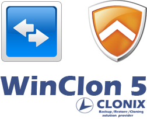
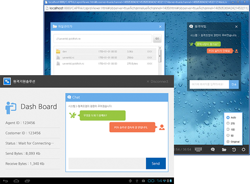
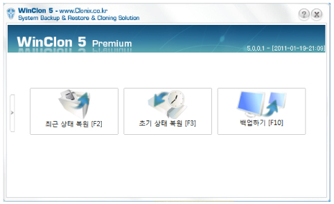
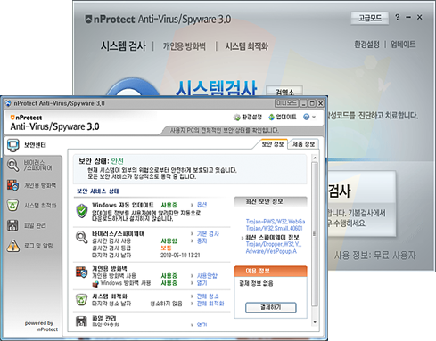

업솔루션 ASP Solution에서 제공하는
Utility 를 소개합니다.
원격지원 솔루션, 복구솔루션, 백신프로그램을 통해
고객님께 편리하고 빠른 서비스와 신뢰감 높은 보안 서비스를
제공합니다.

원격지원 솔루션
원격지원을 통해 고객의 문제를 보다 신속하게 진단하고 해결해 드립니다.
- POS, PC, Mobile 기기 원격 서비스
- 파일전송
- 실시간 채팅
- 화면회전
- 녹화영상 제생


복구솔루션
WinClon 5.0 Premium는 POS에 에러가 발생했을때 복구해 주는 솔루션으로, POS를 가장 효율적으로 관리할 수 있습니다.
- 기본 백업 영역 외 업데이트를 위한 별도 복원 영역 생성 가능
- 파티션 별,디스크전체 선택 백업/복원
- 다양한 외부미디어 백업 가능 (HDD, 외장하드, DVD, USB 등..)
- 시스템 재 부팅이 필요 없는 백그라운드 백업 기능 제공
- 자동 복원 및부팅 미디어 생성 기능
- 정기 자동복원을 위한 스케줄링 복원 기능 지원
- Windows XP 이상, Linux O/S 지원
백신프로그램
nProtect AntiVirus 3.0 으로 급변해가는 보안환경에 맞는
새로운 보안 해결책을 제공합니다.
- 개인정보 관리
- 파일 암호화 및 파일 완전삭제
- 악성 프로그램으로부터 보호
- 악성코드 샘플 자동 수집 및 신고
